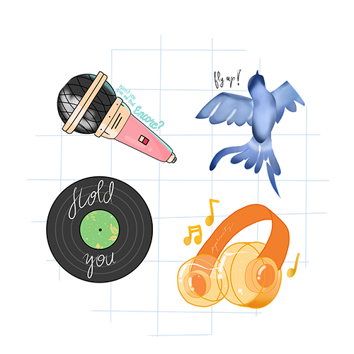
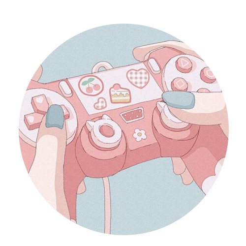

PROFILE
full name
Jemimah Lorelai P. Pascual
\
nickname
Jem
favorite food
Sinigang
Hi! Welcome to my web page. There's nothing much to see here but I hope you enjoy looking!
Jemimah Lorelai
Pascual
Favorite CMSC Subject
My favorite cmsc subject so far is CMSC 22 because I enjoyed
having a visual representation of how the code works. Moreover, I also do enjoy
creating and making an application work properly. Perhaps my enjoyment in this subject
can also be related to my appreciation and interest in games and somehow, this subject
so far is the closest or works as a startup to creating applications.
Favorite GE so far
My favorite elective so far is KAS 1. I was interested in knowing what
notable events took place in the early years which gave birth to the world we know today.
Moreover, our professor in this subject was very knowledgeable and at the same time enter-
taining that the subject became enjoyable to learn.
Favorite programming language so far
My favorite programming language so far is Javascript because of interactive
elements that allows the user to engage with the web pages. Moreover, it is also the language used
by my favorite CMSC subject so far thus I have more patience checking codes line per line in eclipse
compared to other programming languages and applications so far.
Hobbies


dancing creating digital art gaming watching series